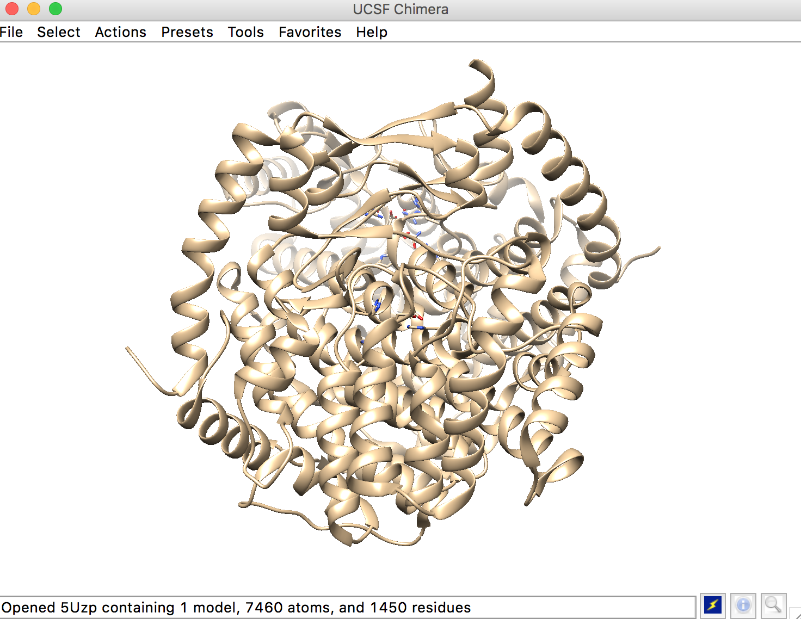
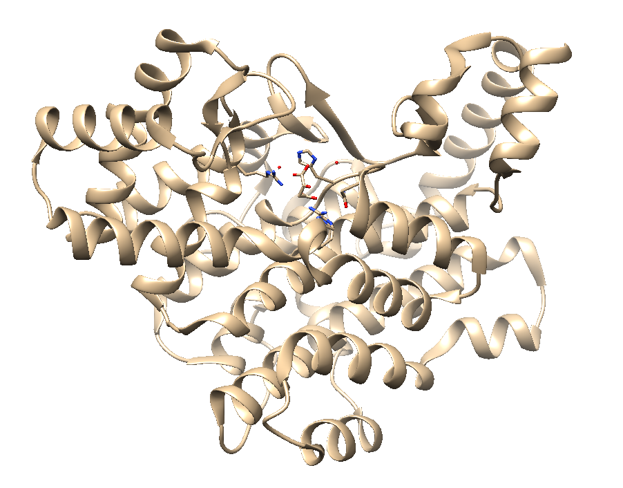
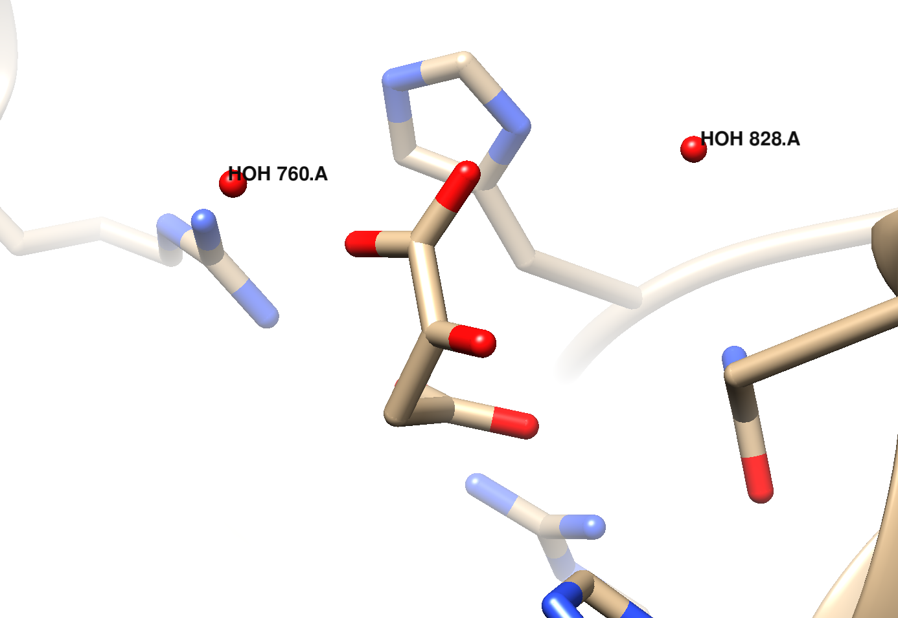
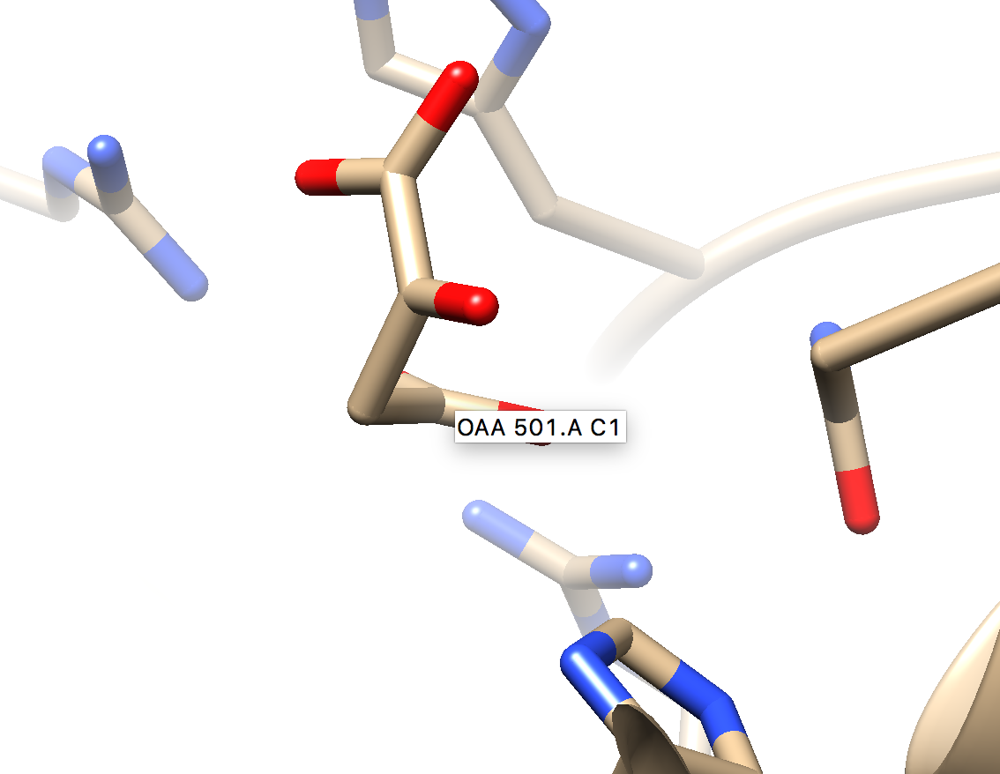
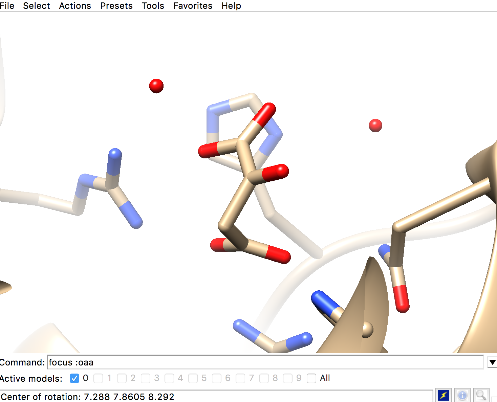
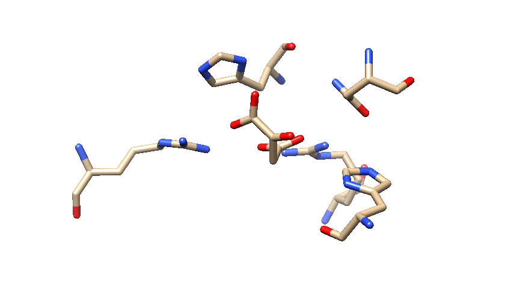

Step Six: Identify Ligand Infortmation
a)get atoms to match from each protein structure
ex) actions -> color -> all options -> background box -> white

b)delete the unnecessary parts of the protein
NOTE: in the provided images, step c(focus :ligand) was performed
before ~disp solvent for clarity purposes
- only use one chain identified in the ligand information from the PBD entry
ex)del :b-z

- rid the structure of other ligands and the solvent
ex) ~disp solvent
Ligand with Solvent

Ligand without Solvent

ex - 4WLO) del :NAI
c)focus on the ligand using the command line
ex)focus :OAA

d)focus on the amino acids and ligand, without additional secondary structure
ex)~ribbon
